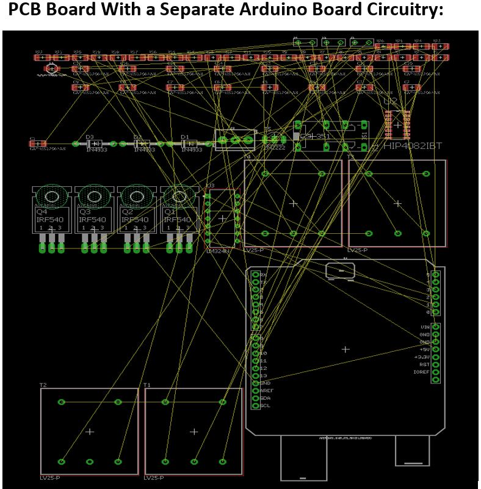
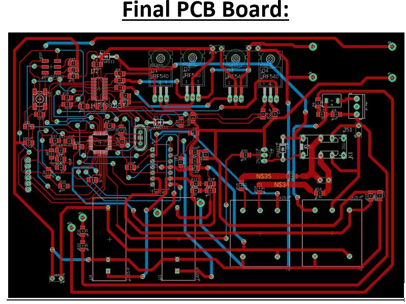
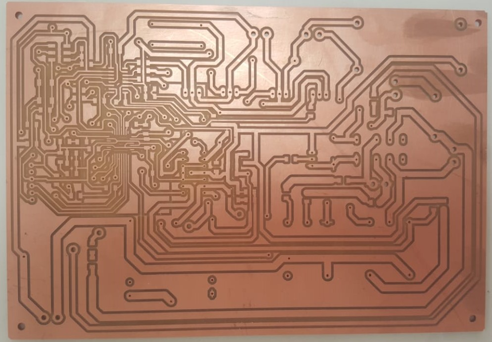
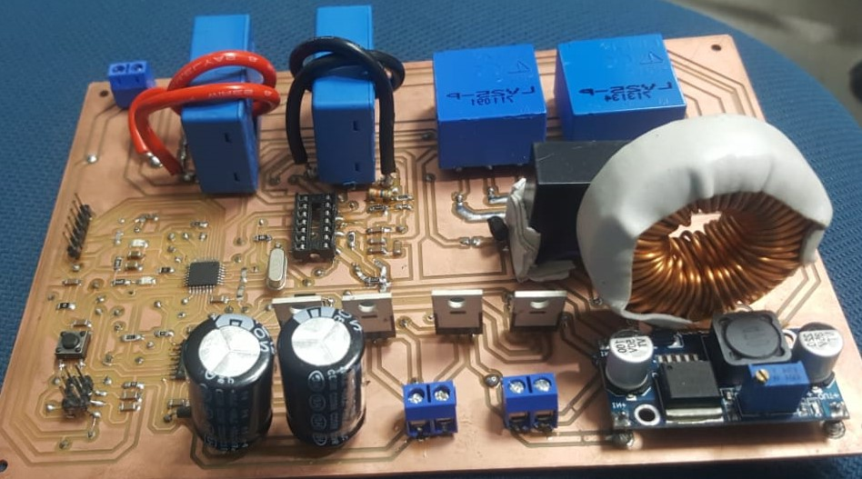

|
MICRO INVERTER PROJECTINSTRUCTOR: SIR ASIM ALI SAMEJO |
|---|
| The circuitry which we had followed was using the Arduino board as shown in the following PCB board. The following PCB board was designed by us, but when our instructor saw it, he instantly rejected it, because it was covering a large space on the board. Instead we can use just an embed microcontroller with all other arduino board circuitry. Its advantage was that it covers a very little space on the board as compare to the Arduino board. So we must have to use an embed microcontroller to save the space. |
|  |
| Here is the following figure of PCB board, we can see that there is a huge difference in size between the “Arduino Board” and the embed microcontroller ATMega328P. The size of the board has been reduced significantly. |
 |
| After embedding the microcontroller we were confused that how we would upload the code and how it would work? Isn’t the Arduino board circuitry would mix up with the other circuitry of the board? Is there any difference between the pin numbers of a separate ATMega328p microcontroller and the “Arduino Board”? These were the few questions arising in our minds. Then our instructor told that the circuitry wouldn’t be mix up with the other circuitry and the code would be uploaded with the boot loader. And there is no difference between the pin configuration of the microcontroller and the “Arduino Board”. We don’t have to make changes in the code due to pin configuration. We can upload the same code as on the “Arduino Board” with no significant changes. It was confirmed after the printing of the board. In the following figure we uploaded the LED blinking code and one can see that the “Arduino Board” circuitry is working properly. Consequently, we have successfully embedded the “Arduino Board” in our circuitry. |
 |
| Routing was the biggest challenge of our project. It was so complex that most of the time we spent while doing routing. There were three IC’s (microcontroller, hip4082 and LM324) interconnected to each other and the four sensors (two current sensors and two voltage sensors) along with “Arduino Board” circuitry. It was a tough job to route them on a single layer (approximately impossible). There were many overlaps. Consequently we decided to make two layers PCB board. After a very hard work we succeeded in making the final PCB board. |
|  |  |
| In our circuitry we have to use the three voltage sources in order to operate the different components, one for the microcontroller (5v), the second for the hip4082 IC (12v) and the third for the sensors (Dual voltage supply +15v and -15v). We embed the buck converter (12v input and 5v output) on the PCB board to operate the microcontroller. But we don’t have the dual power supply (+15v and -15v) to embed on the PCB board. Hence we used an external dual power supply in order to operate the sensors. The fourth input voltage source was to whom we have to convert into 220v AC output. |
|  |
| We need a 48mH inductor in LC filter but we don’t have the inductor of our desired value. The inductor of the desired value was also not available in the local market. So we were compelled to use an inductor of low value (2mH). Our instructor told us that it would only have effects on the distortions of the output sinusoidal waveform and it doesn’t effects the overall output. Its only effect that could be observed is the distortions in the output sinusoidal waveform. |